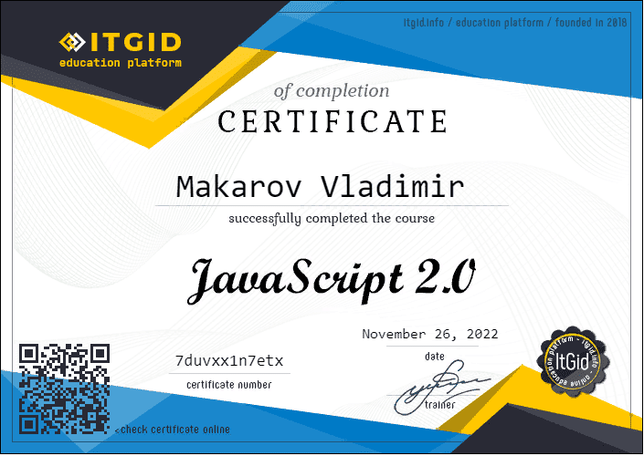
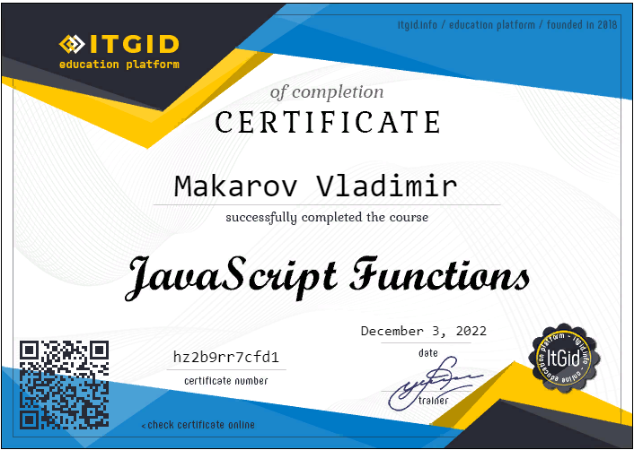
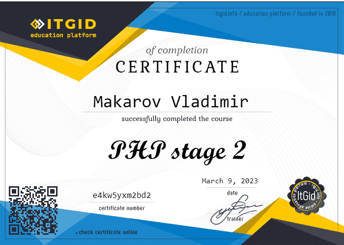
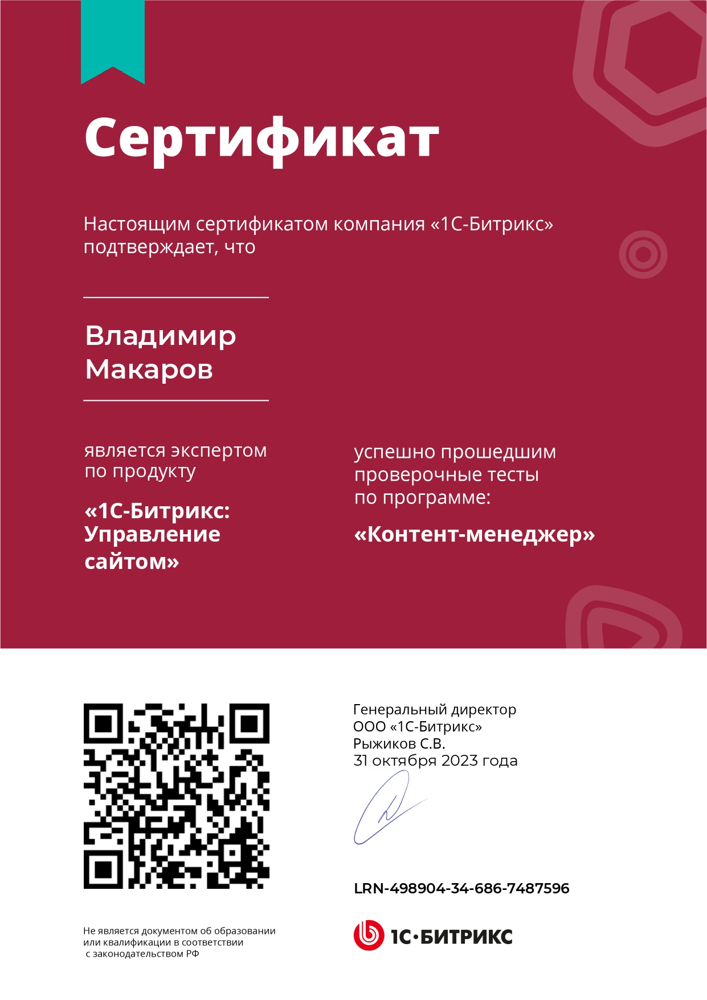

Vladimir Makarov
Junior Frontend Developer
About Me
I currently have experience working both as a Web Developer and a Web Project Manager. I've contributed to website creation and maintenance on the Bitrix CMS, handling external service integrations and performance optimization. Additionally, I've coordinated project tasks and collaborated with clients and teams to ensure successful project execution. I completed a professional retraining program in Information Systems and Technologies at ITMO University and finished the initial stage of The Rolling Scopes School by Epam (stage 0). Now, I’m actively exploring various areas related to web development and trying myself in different fields. My goal is to become a skilled professional in web development and project management.
Purposes
My goal is to grow and build a career in IT by working on meaningful and challenging projects as a web developer. I am eager to expand and deepen my knowledge in web development, exploring new approaches and technologies. I am drawn to roles that allow for creativity, problem-solving, and continuous learning, where I can make a meaningful contribution to the team and the project.
Motivation
My motivation stems from a genuine love for programming and a strong desire to stay up-to-date with the latest industry trends and technologies. I am constantly exploring online resources, engaging in self-study, and participating in relevant online communities to expand my knowledge and skills. I am driven by the satisfaction of solving complex problems and the opportunity to create innovative and efficient solutions.
Why Hire Me
By hiring me, you will get a dedicated and adaptable Full-stack Developer who strives to achieve outstanding results. I am a quick learner and excel in challenging environments where I can constantly improve my skills. I possess strong problem-solving abilities, attention to detail, and the ability to work collaboratively, which facilitates effective communication. My passion for web development and the ability to grasp new concepts quickly make me a valuable asset to any development team.
While I haven't attended specific conferences or exhibitions, my eagerness to learn and staying up-to-date with the latest industry trends ensure that I am always aware of the newest technologies. I am ready to apply my experience and enthusiasm to help your organization achieve its goals in the rapidly evolving field of web development.
Skills
Soft Skills
- Communication: I possess strong communication skills, enabling effective collaboration with colleagues and stakeholders. I prioritize open and clear lines of communication to ensure smooth workflow and successful project outcomes.
- Willingness to learn: I have a strong passion for continuous learning and staying updated with the latest advancements in the ever-evolving technology landscape. I actively seek out opportunities to expand my knowledge and skills, adapting to new technologies and industry changes within the development environment.
- Creativity: I thrive on generating fresh and innovative ideas, bringing new perspectives to project development. Embracing creativity allows me to deliver unique and engaging solutions, enhancing the overall quality and user experience.
- Problem-solving: I am highly proactive in taking ownership of any mistakes and swiftly implementing effective solutions. I excel in both independent problem-solving and collaborating with teams to tackle challenges efficiently, ensuring optimal project performance.
- Teamwork: I am a collaborative team player who values open communication and the contributions of every team member. By fostering a cooperative environment, I actively contribute to project success and the overall growth of the company. I believe that when everyone's voice is heard and respected, we can achieve remarkable results.
Tech Skills
- HTML5
- CSS
- Basic JavaScript
- Bootstrap 4 / Flexbox
- npm
- Git / GitHub
- Sass
- PHP
- Composer
Experience/ Education
Experience
I’ve Commercial project.
Business Analyst / Developer / Content Manager at CDS Northern Capital
15 October — Present
CDS Northern Capital
At CDS Northern Capital, I seamlessly blend my expertise in business analysis, software development, and content management to drive digital transformation. I am responsible for optimizing business processes by integrating cutting-edge solutions such as the Pyrus API. My role involves strategic analysis, creative problem-solving, and proactive communication, ensuring that each project not only meets but exceeds expectations. I am dedicated to delivering high-quality results that empower the organization to achieve its long-term goals.
Web Project Manager at its.agency
August 2024 — Present (3 months)
Saint Petersburg, its.agency
Managing and coordinating web projects from development to final implementation. Interacting with clients to gather and clarify requirements, without participating in sales. Collecting and processing project data, monitoring the completeness and correctness of task descriptions. Assigning tasks to development and design teams and controlling their execution through task trackers. Monitoring the consistency of development, testing, and implementation stages. Managing task deadlines and agreeing on project changes. Interacting with teams to ensure coordinated work at all stages of development. Resolving organizational issues related to project support and updates. Maintaining internal documentation and project reporting.
Web Developer at DIGIMATIX
November 2023 — July 2024 (9 months)
Saint Petersburg, www.digimatix.ru
Development and support of web projects: Participated in the creation and maintenance of websites on Bitrix CMS, including setup and optimization of templates, modules, and components to improve functionality and user experience. Task management and team interaction: Coordinated work with designers and marketers for successful implementation of web projects, adhering to deadlines and requirements. Aligned tasks among project participants to achieve goals. Integration of external services: Developed solutions for integration with APIs and external systems, ensuring seamless operation of web projects and enhancing their functionality. Performance optimization: Conducted site audits and implemented measures to improve performance, including speeding up page loading and enhancing security. Process automation: Created and implemented scripts for automating server processes such as content updates, backups, and monitoring, reducing time spent on routine tasks. Deadline and priority control: Monitored task completion in projects, ensuring deadlines are met and priority tasks are executed sequentially.
I’ve several educational projects.
Education
- ITMO University (St. Petersburg, Russia)
- JavaScript2.0 - курс ItGid
- PHP - stage 2 - курс ItGid
- JavaScript Function - курс ItGid
- Bitrix content manager
- GeekBrain
- GloCademy marathones
- Loftschool
- Epam The Rolling Scopes School (currently)
- FreeCodeCamp / HTMLAcademy / Codecademy

Закрыть
Закрыть
Закрыть
ЗакрытьEnglish
Level: A2-B1 (Intermediate)I studied English in school and continued learning it after entering university. During my university studies, I also attended a language school where I successfully completed two levels of training. English language proficiency is important to me, especially in the context of international travel
Due to the current political situation, opportunities for international trips and personal interactions have significantly decreased. However, despite this, I maintain active usage of the English language in written and spoken form through virtual communications, engaging with international communities, and reading specialized literature in English.
I realize the importance of maintaining and developing my language skills, so I continue to pursue self-education, English language learning, and practice whenever possible. I am ready to quickly restore my level of proficiency and actively participate in situations that require communication in English.
Although the current situation limits my opportunities for practicing English through international travel and in-person meetings, I remain motivated and committed to developing my language skills and expanding my English communication abilities.
Sample code
Your coworker was supposed to write a simple helper function to capitalize a string (that contains a single word) before they went on vacation. Unfortunately, they have now left and the code they gave you doesn't work. Fix the helper function they wrote so that it works as intended (i.e. make the first character in the string "word" upper case). Don't worry about numbers, special characters, or non-string types being passed to the function. The string lengths will be from 1 character up to 10 characters, but will never be empty.
function capitalizeWord(word) {
// делим слово на отдельные буквы
const splitted = word.split("");
// делаем первую букву в массиве заглавной
const first = splitted[0].toUpperCase();
// копируем массив, чтобы не модифицировать splitted
const rest = splitted.slice(1);
// соединяем все обратно в строку
const result = first + rest.join("");
return result;
}